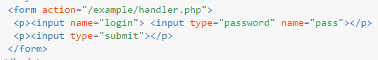
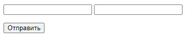
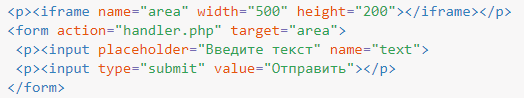
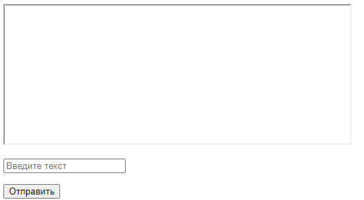
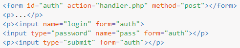
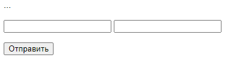
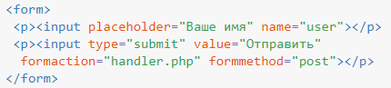
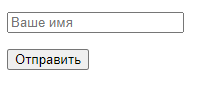
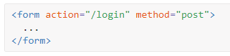

Отправка данных формы
Сама форма обычно предназначена для получения от пользователя информации для дальнейшей пересылки её на сервер, где данные формы принимает программа-обработчик. Такая программа может быть написана на любом серверном языке программирования вроде PHP, Perl и др. Адрес программы указывается в атрибуте action элемента <form>, как показано в примере 1.
Пример 1. Отправка данных формы
 
В этом примере данные формы, обозначенные атрибутом name (login и password), будут переданы в файл по адресу /example/handler.php. Если атрибут action не указывать, то передача происходит на адрес текущей страницы.
Передача на сервер происходит двумя разными методами: GET и POST, для задания метода внутри <form> используется атрибут method, а его значениями выступают ключевые слова get и post. Если атрибут method не задан, то по умолчанию данные отправляются на сервер методом GET. В табл. 1 показаны различия между этими методами.
| GET | POST | |
|---|---|---|
| Ограничение на объём | 4 Кб | Ограничения задаются сервером. |
| Передаваемые данные | Видны сразу всем. | Видны только при просмотре через расширения браузера или другими методами. |
| Кэширование | Страницы с разными запросами считаются различными, их можно кэшировать, как отдельные документы. | Страница всегда одна. |
| Закладки | Страницу с запросом можно добавить в закладки браузера и обратиться к ней позже. | Страницы с разными запросами имеют один адрес, запрос повторить нельзя. |
Какой метод используется, легко определить по адресной строке браузера. Если в ней появился вопросительный знак и адрес стал похож на этот, то это точно GET.
http://www.google.ru/search?q=%D1%81%D0%B8%D1%81%D1%8C%D0%BA%D0%B8&ie=utf-8
Уникальное сочетание параметров в адресной строке однозначно идентифицирует страницу, так что страницы с адресами ?q=node/add и ?q=node считаются разными.
Эту особенность используют системы управления контентом (CMS, Content management system) для создания множества страниц сайта. В реальности же используется один файл, который получает запрос GET и согласно ему формирует содержимое документа
Ниже перечислены типовые области применения этих методов на сайтах.
GET
- Передача небольших текстовых данных на сервер;
- поиск по сайту.
POST
- Пересылка файлов (фотографий, архивов, программ и др.);
- отправка комментариев;
- добавление и редактирование сообщений на форуме, блоге.
Работа с формой по умолчанию происходит в текущей вкладке браузера, при этом допустимо при отправке формы изменить этот параметр и открывать обработчик формы в новой вкладке или во фрейме. Такое поведение задаётся через «имя контекста », которое выступает значением атрибута target элемента <form>.
Популярные значения это _blank для открытия формы в новом окне или вкладке, и имя фрейма, которое задаётся атрибутом name элемента <iframe> (пример 2).
Пример 2. Открытие формы во фрейме
 
В данном примере при нажатии на кнопку «Отправить» результат отправки формы открывается во фрейме с именем area.
Элементы формы традиционно располагаются внутри элемента <form>, тем самым определяя те данные, которые будут передаваться на сервер. В то же время в HTML5 есть возможность отделить форму от её элементов. Это сделано для удобства и универсальности.
Так, сложный макет может содержать несколько форм, которые не должны пересекаться меж собой или к примеру, некоторые элементы выводятся с помощью скриптов в одном месте страницы, а сама форма находится в другом.
Связь между формой и её элементами происходит в таком случае через идентификатор формы, а к элементам следует добавить атрибут form со значением, равным этому идентификатору (пример 3).
Пример 3. Связывание формы с полями
 
В этом примере <form> однозначно отождествляется через идентификатор auth, а к полям, которые следует отправить с помощью формы, добавляется form="auth". При этом поведение элементов не меняется, при нажатии на кнопку логин и пароль пересылаются на обработчик handler.php.
Хотя параметры передачи формы традиционно указываются внутри <form>, их можно перенести и в кнопки отправки формы (<button> и
<input type="submit">).
Для этого применяется набор атрибутов formaction, formmethod, formenctype и formtarget, которые являются аналогами соответствующих атрибутов без приставки form. В примере 4 показано использование этих атрибутов.
Пример 4. Отправка формы
 
Резюме
Чтобы добавить форму на страницу мы будем использовать элемент <form>. Данный элемент определяет, где на странице появятся элементы управления. Кроме того, элемент <form> обёртывает все элементы включенные в форму, подобно элементу <div>.

<form> является блочным элементом, который определяет интерактивную часть веб-страницы. Как результат, все элементы управления (такие как <input>, <textarea> или <button>) должны находиться внутри элемента <form>.
Два атрибута HTML необходимы:
- action содержит адрес, который определяет, куда будет отправлена информация формы;
- method может быть либо GET, либо POST и определяет, как будет отправлена информация формы.
Как правило, информация формы посылается на сервер. Как эти данные затем будут обработаны выходит за рамки данного руководства.
Подумайте о форме, как о наборе элементов управления, которые работают вместе, чтобы выполнить одну операцию.
Если вы написали форму входа на сайт, у вас могло быть три поля:
- поле для электронной почты <input type="email">
- поле для пароля <input type="password">
- кнопка отправки <input type="submit">
Эти три элемента HTML будут заключены внутри одной формы <form action="/login" method="POST">.
Вы можете аналогично добавить форму регистрации на той же HTML-странице, в отдельном элементе <form>.